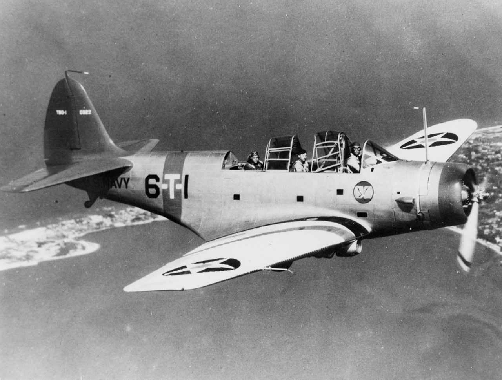
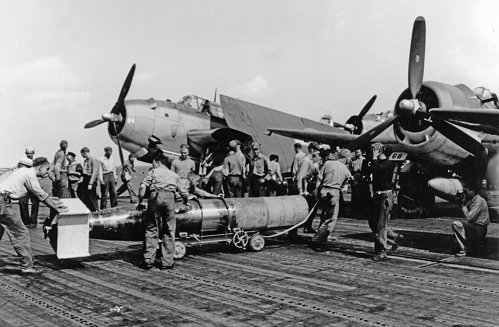
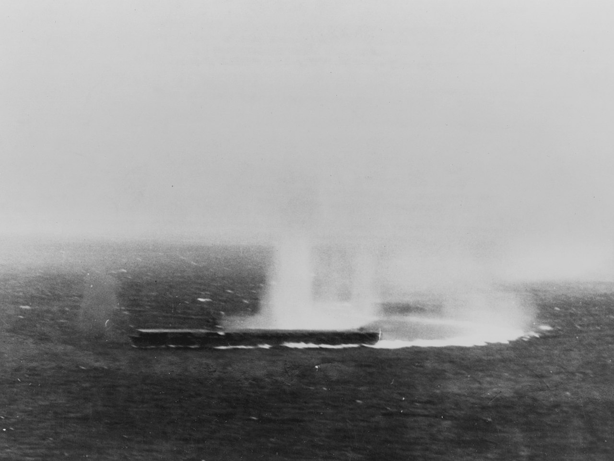
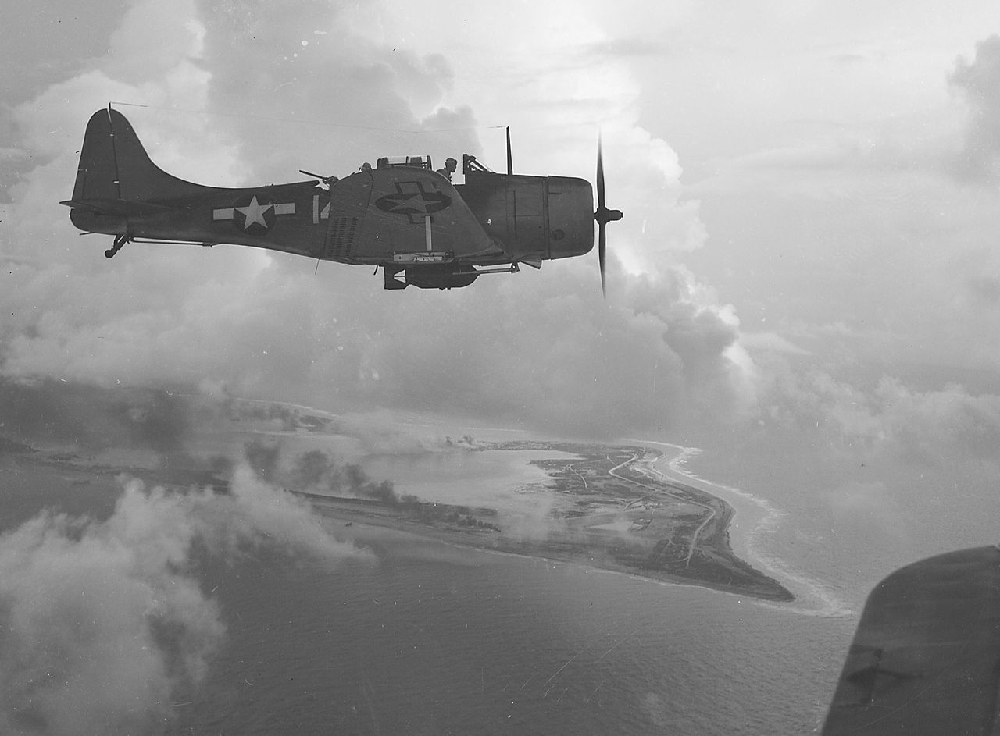
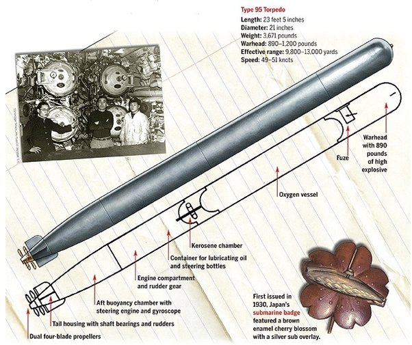
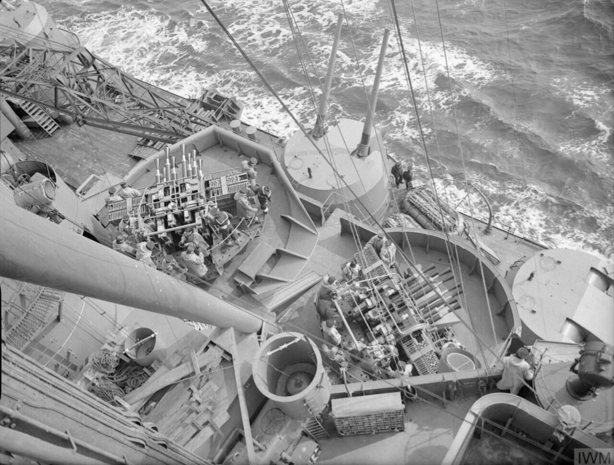

레이더 개발 이야기 (56) - 렉싱턴의 최후 (상)
게시: 2023-11-23T06:30:09+09:00
<82대 vs. 69대> 운명의 5월 8일, 아침 8시 7분 경 길(Red Gill) 대위의 레이더는 렉싱턴으로부터 330도 (그러니까 약간 북서쪽) 35km 지점에서 뭔가를 포착. 관찰을 해보니 240도 방향, 즉 남서쪽으로 빠른 속도로 날아가고 있었음. 길 대위는 즉각 CAP을 그 지점으로 유도해서 확인을 시켰으나 아무 것도 발견하지 못했고 레이더 상에서도 사라짐. 길 대위는 그것이 snooper, 즉 일본 해군 정찰용 수상기 같았으며 그것이 아군 함대를 보았을 가능성이 매우 높다고 보고 함대 사령관인 플렛처 제독에게 보고. 바로 직후인 8시 20분, 렉싱턴에서 일본 항모를 찾으라고 날려보냈던 정찰용 Dauntless 급강하 폭격기들 중 한 대가 북쪽 280km 지점에서 일본 함대를 발견했으며, 그것들이 15노트의 속도로 똑바로 남쪽으로 내려오고 있다고 무전으로 보고. 불과 몇 분 후, 일본 해군 무전 통신이 감청되었는데, 번역을 해보니 미해군 함대의 위치와 방향, 속도를 보고하는 것이었음. 그러니까 서로가 서로를 발견한 셈. 대충 계산을 해보니 11시 경이면 적기의 공습이 시작될 판. 렉싱턴과 요크타운에서도 9시 25분까지 일본 항모를 때려잡을 공격 편대를 모두 출격시킴. 두 항모에서 날아오른 공격 편대는 총 46대의 급강하 폭격기, 21대의 뇌격기, 그리고 15대의 호위 전투기. 현편 일본 항모 쇼가꾸와 즈이가꾸에서도 9시 15분까지 33대의 급강하 폭격기, 18대의 뇌격기, 18대의 호위 전투기를 출격시킴. 82대 vs. 69대의 싸움.

(당시 미해군 주력 뇌격기였던 Douglas TBD Devastator. TBD는 Torpedo Bomber Douglas의 약자. 꼭 어뢰만 사용하는 것이 아니라 당연히 폭격임무도 가능. 그러나 급강하 폭격은 못하고 수평 폭격만 가능. 3인승으로서 맨 앞에 조종사, 중간에 폭격수, 맨 마지막에 무선통신 및 후방기총수가 탑승. 폭격수는 어떻게 보면 상당히 할 일이 없는 것처럼 보이지만 실제 폭격할 때는 바닥에 엎드려 조종사 좌석 아래로 길게 누워 거기서 Norden bombsight를 이용해 조준을 하는 등 꽤 험한 일. 기타 평상시 drift sight를 통해서 조종사의 항법 임무도 보조. 그에 대해서는 https://nasica1.tistory.com/403 참조.)

(미해군 주력 항공 어뢰이던 Mark 13. 같은 Mark 13이긴 하지만 이건 1942년 당시의 엉터리 어뢰가 아니라 대폭 개선된 1944년의 USS Wasp (CV-18) 함상에서의 모습. 어뢰 머리 부분과 꼬리 부분에 나무 부품이 붙어있는데 이건 투하되어 해면에 부딪히는 순간 떨어져 나감. 저 나무판들의 목적은 비행시의 안정과 함께 착수할 때의 충격을 흡수하는 역할.)
미해군 함재들은 어렵지 않게 쇼가꾸와 즈이가꾸를 발견했으나, 하필 즈이가꾸는 소나기 구름에 가려져 있어 쇼가꾸에 공격을 집중. 당시 미해군 어뢰에는 심각한 성능 및 신뢰성 부족 문제가 있었는데, 아니나 다를까 9발의 어뢰가 쇼가꾸에 집중되었으나 다 빗나감. (아마 맞았아도 폭발하지 않았을 가능성이 높았음.) 대신 요크타운의 급강하 폭격기들이 15발을 투하하여 그 중 2발을 쇼가꾸에 명중시킴. 화재가 발생했지만 그럼에도 쇼가꾸는 자력으로 항행할 뿐만 아니라 함재기 운용을 계속함. 그러나 곧 렉싱턴의 급강하 폭격기들이 1발을 더 꽂아넣었고, 쇼가꾸는 더 이상 함재기의 착함을 받지 못함. 쇼가꾸는 이때 얻은 파손을 제때 수리하지 못해 결국 미드웨이 해전에 참전하지 못함.

(1942년 5월 8일, 산호해 해전에서 요크타운 돈틀리스들의 폭격을 요리조리 피하고 있는 쇼가꾸의 묘기 쇼쇼쇼)
<먹통은 언제나 가장 절실한 순간에> 한편, 10시 8분 미함대 인근에도 일본 해군의 4발 수상정이 나타남. 그런데 매우 저공으로 날아와 CXAM 레이더에 포착되지 않았고 미함대 상공에 떠있던 CAP 전투기들이 육안으로 발견하고 격추. 불안해진 렉싱턴의 함장 Sherman 대령은 10대의 Dauntless 급강하 폭격기들을 출격시켜 함대 주변을 뱅뱅 돌게 함. 낮게 날아올 일본 뇌격기들을 육안으로 발견하고 격추하라는 뜻. 원래 미해군 항모에는 보통 4개의 비행 중대(squadron)가 배치되어 있었는데, 첫번째는 호위 전투기, 두번째는 뇌격기, 세번째와 네번째는 급강하 폭격기였는데, 그 두 개의 급강하 폭격기 중대 중 하나는 'bombing'이고 다른 하나는 'scouting'이었음. 즉 급강하 폭격기가 속도도 빠르고 덩치가 커서 항속거리가 길기 때문에 평상시에도 원거리 정찰용으로 사용되었던 것. 그러나 이렇게 출격한 돈틀리스들은 레이더 관제사 길 대위의 통제를 받지 않는 부대였고, 결국 별 도움이 되지 못함. 돈틀리스 조종사들도 이상한 임무에 자신들을 투입한다며 툴툴거리며 출격.

(1943년 Wake 섬 상공의 Douglas SBD Dauntless 급강하 폭격기. SBD는 Scout Bomber Douglas의 약자로서, 원래부터 정찰임무도 고려하여 설계된 함재기. 같은 시기 활약하던 뇌격기인 Devastator의 성능이 영 불만족스럽던 것에 비해 돈틀리스는 제몫을 다해줌.)
일본 주력 공격 편대가 나타난 것은 애초에 예상했던 대로 10시 48분. 북서쪽 100km 지점에서 레이더에 포착됨. 그런데 이렇게 날아오던 일본 해군 편대는 하필 이 중간 어디쯤에서 매우 넓은 fade area에 들어가버림. (Fade area에 대해서는 바로 지지난 편 https://nasica1.tistory.com/726 참조.) 그 때문에 길 대위는 CAP 전투기들을 제대로 유도해주지 못 했고, 결국 일본 편대는 미해군 전투기들의 요격을 받지 않고 렉싱턴과 요크타운 매우 가까이까지 접근. 당시 렉싱턴의 당직 장교(officer of the deck)이던 Jim Dudley 중령은 CXAM 레이더가 언제나 큰 역할을 해주었는데 하필 가장 중요한 순간에 먹통이 되었다고 나중에 아쉬워 함. 중요한 순간에 일본 편대를 놓친 길 대위는 기존에 CAP을 치고 있던 8대 외에 추가로 렉싱턴에서 5대, 요크타운에서 4대의 Wildcat 전투기들을 추가로 출격시켜 그 중 렉싱턴의 5대를 일본 편대가 있으리라고 추측되는 지점으로 보냄. 그런데 이때 그는 이들을 3km 고도로 비행하라고 지시. 적기들이 높은 고도로 날아오는지 낮은 고도로 날아오는지, 혹은 폭격기들은 높게 뇌격기들은 낮게 갈라져서 날아오는지 알 수 없었으므로 중간 정도의 고도인 3km 고도를 유지시킨 것. 너무 높게 5~6km 정도로 날면 저공으로 침투하는 뇌격기들이 육안에 보이지 않을 수 있고, 너무 낮게 날면 고공으로 침투하는 급강하 폭격기들을 막을 수가 없기 떄문. 그런데 막상 해당 지역으로 날아가보니 낮은 구름이 잔뜩 끼어있음! 이 보고를 받은 길 대위는 약간 북서쪽에 있던 5대의 와일드캣 중 2대를 낮은 고도로 내려보냄. 뿐만 아니라 요크타운에서 출격하여 약간 북동쪽으로 날려보낸 4대도 아예 1km 이하 고도로 날게 함. 이건 일본 공격 편대가 저고도로 날아올 것이라고 판단한 일종의 도박. <어뢰의 공포> 길 대위가 이렇게 저고도에 집착한 이유가 있었음. 미해군의 약점이 심각한 신뢰성 문제를 앓고 있던 어뢰였던 것과는 정반대로, 당시 일본 해군의 강점이 바로 뇌격기에서 투하하는 항공 어뢰였기 때문. 처칠 수상이 불침전함이라고 자랑하며 이거 한 척 보내면 동남아 방어는 문제 없을 것이라고 생각했던 로열 네이비의 최신예 전함 HMS Prince of Wales(4만4천톤, 28노트)를 용궁으로 보내는 데 결정적인 역할을 한 것이 바로 항공 어뢰. 일본군의 어뢰는 속도가 42노트에 달해 연합군에게는 공포의 대상. 프린스 오브 웨일즈의 대공포 사수들은 원래 '폭탄이나 어뢰를 이미 투하한 적기에는 무시하고 아직 폭탄과 어뢰를 장착하고 있는 적기에 사격을 집중하라'고 훈련을 받았으나, 막상 일본 뇌격기들과 교전을 해보니 프린스 오브 웨일즈의 대공포인 Pom-pom gun의 사거리인 2km 밖에서 어뢰를 투하하고 날아갔으므로 어쩔 수 없이 어뢰가 없는 뇌격기에 사격을 했다는 소리가 나왔을 정도.

(이건 구축함과 순양함에서 쏘던 Type 93 '산소' 어뢰. 위에서 언급한 미해군 초기 Mark 13 어뢰가 고작 33노트의 속도 밖에 못 냈던 것에 비해 무려 52노트의 속도를 냈음. 그러나 정작 사정거리는 Mark 13 어뢰가 훨씬 길어 거의 6km에 달함. 이 산소어뢰는 뇌격기에서는 운용하지 못했다고.)

(HMS Prince of Wales에 장착된 2문의 8연장 pom-pom 대공포. Pom-pom은 별명이고 정식 명칭은 QF 2-pounder naval gun. 당시 로열 네이비의 주력 대공포이던 pom-pom에 대해서는 기대가 컸지만 실제로는 짧은 사거리와 잦은 탄막힘 등 문제가 많았고, 결국 나중에 스웨덴제를 라이센스 생산한 보포르 대공포(Bofors 40 mm gun)로 교체됨. 하지만 위에서 언급한 프린스 오브 웨일즈에서의 빈 뇌격기와 pom-pom 대공포 이야기는 그냥 지어낸 이야기일 것. 실제 폼폼 대공포의 유효 사거리는 4km 정도로서 Type 91 항공 어뢰의 사거리보다는 훨씬 길었음.) <빗나간 도박> 그러나 길 대위의 도박은 보기 좋게 빗나감. 낮은 고도로 날아간 와일드캣들이 무언가 보기는 했으나 그건 셔먼 함장이 함대 주변을 순찰하라고 돌리던 돈틀리스 폭격기들. 적기를 발견한 것은 북동쪽이 아니라 북서쪽, 그것도 저고도가 아니라 3km 고도를 날고 있던 3대의 와일드캣. 적기는 약 60대의 대편대로서, 고도 4km에는 전투기들이, 그 밑에는 급강하 폭격기들이, 그리고 그 밑에는 다시 전투기들이, 끝으로 맨 바닥층인 고도 3km에는 뇌격기들이 층층이 쌓여 날아오고 있었음. 이들은 아무런 요격도 받지 않은 채 렉싱턴과 요크타운으로부터 불과 30km 정도까지 접근한 상태였음. 3대의 와일드캣이 이들과 딱 마주쳤을 때 이미 일본 뇌격기들은 미해군 항모들을 향해 다이빙을 시작한 상태였기 때문에, 와일드캣 편대는 그들을 포기하고 그 위를 날고 있던 급강하 폭격기들을 요격하기로 함. 그러나 그러려면 먼저 고도를 높여야 함. 상황이 최악이었던 것은 이 와일드캣들의 편대장이 너무 흥분한 나머지 'tallyho'와 함께 당연히 보고했어야 하는 적기의 숫자와 종류, 특히 길 대위가 절실하게 필요로 하던 적기의 고도에 대한 정보를 하나도 보고하지 않고 공중전에 돌입했다는 것. 다만 흥분한 사람들이 흔히 그러듯 이 와일드캣들은 다급한 목소리로 무선을 주고 받았으므로 렉싱턴에서도 이들이 공중전을 시작했다는 것은 알 수 있었음. 길 대위는 이제 연료가 다 떨어져가는 상태로 항모 위를 지키고 있던 CAP 와일드캣들에게 곧 적기가 몰려온다고 알려줌. 그러나 (알 수가 없으니) 어느 고도에서 쳐들어올지는 역시 알려주지 못함.
(다음 주에 계속...)